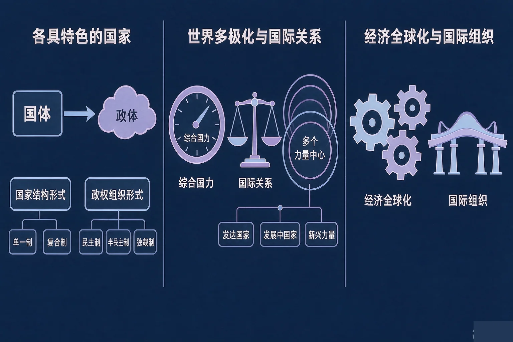
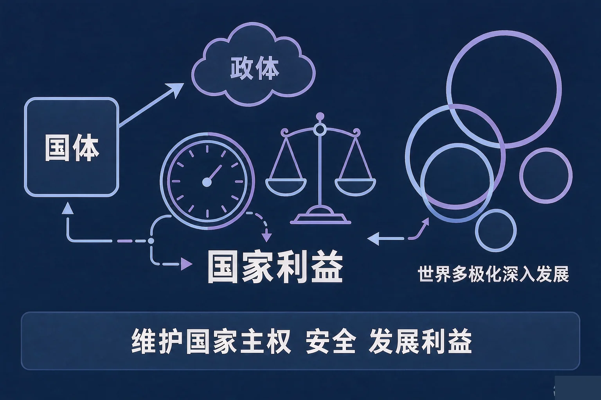
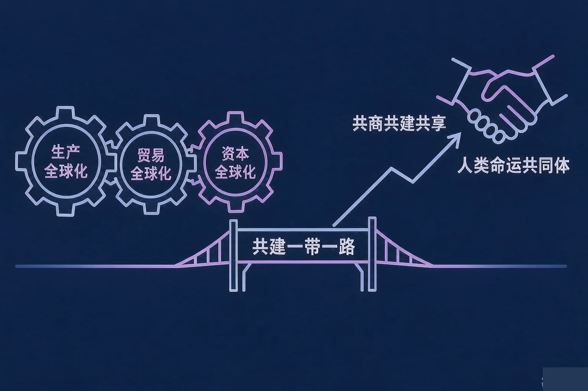

Gallery
v1.0.0 · skill v7.22.0
高中高二 · 当代国际政治与经济
当今世界是什么样的，中国怎么看、怎么办？

选一个你真正想弄清的问题，后面的活动都会围着它转。
选择或输入后，这节课会围绕你的问题展开。
先凭直觉选一个，选完立刻看到解释——错了也没关系，正好知道要重点听哪里。
1. 关于台湾、中国香港和中国澳门，下面哪一句表述准确？
世界上只有一个中国，台湾是中国不可分割的一部分；中国香港、中国澳门是特别行政区，实行一国两制，享有高度自治权，中央对香港、澳门拥有全面管治权。错因提醒：常见错误是误认为台湾与特别行政区地位相同或者可以并列，这一条必须写准，不能有丝毫含糊。
2. 关于经济全球化，下面哪一句表述准确？
经济全球化主要表现为生产全球化、贸易全球化和资本全球化，跨国公司是重要载体；它是社会生产力发展的客观要求和科技进步的必然结果，也是一把双刃剑，既带来机遇也带来挑战。错因提醒：容易误认为经济全球化「只有好处」或者「谁想停就能停」，这两种理解都不符合实际。
3. 关于我国的外交政策，下面哪一句表述准确？
我国奉行独立自主的和平外交政策，宗旨是维护世界和平、促进共同发展，基本立场是独立自主，基本目标是维护我国的主权、安全和发展利益、促进世界的和平与发展，基本准则是和平共处五项原则。错因提醒：最常见的是把「基本立场」与「基本准则」搞混——独立自主是基本立场，和平共处五项原则才是基本准则。
为什么要先弄清这一件事？
我们每天都在新闻里看到各国政坛的变动、看到国际上此起彼伏的纷争（And）；但一个国家内部到底由谁掌握权力、国家是怎样组织起来的，今天的世界格局又正在往哪里走，我们往往只有零散的印象（But）；所以这节课先把国家的形式与世界多极化这一段看清（Therefore）。
国体与政体
国家是阶级统治的工具；国家性质就是国体，由统治阶级的性质决定。政体是国家政权的组织形式，国体决定政体，政体体现国体。我国是人民民主专政的社会主义国家，实行人民代表大会制度。
国家结构形式
主要有单一制和复合制。我国是单一制国家，包括一般行政区域、民族自治地方和特别行政区；中国香港、中国澳门是特别行政区，实行一国两制，享有高度自治权，中央对香港、澳门拥有全面管治权。

三条必须写准的领土表述
第一，世界上只有一个中国，台湾是中国不可分割的一部分。第二，中国香港、中国澳门是特别行政区。第三，钓鱼岛及其附属岛屿、南海诸岛是中国固有领土，中国对其拥有无可争辩的主权。
世界多极化与当代国际关系
世界多极化深入发展，多个力量中心不断发展，各国相互联系、相互依存的程度日益加深，和平与发展仍然是时代主题。同时世界面临的不稳定性不确定性突出，霸权主义、强权政治、单边主义、贸易保护主义仍然存在，需要警惕和反对。国家利益是国际关系的决定性因素，国家间的共同利益是国家合作的基础，利益对立则是引起国家冲突的根源。
三个高频错误：一是误认为政体决定国体，把两者关系弄反了，规范表述是国体决定政体、政体体现国体；二是把钓鱼岛及其附属岛屿、南海诸岛误认为「有争议的地区」，规范表述是中国固有领土、中国对其拥有无可争辩的主权；三是搞混「世界多极化」与「世界已经不需要合作」，多极化深入发展的同时，各国相互联系、相互依存的程度也在日益加深。
🔍 深层理解 换个角度再看一遍这件事，看看能不能说出背后的原理。
看见它：同样是国家，各国的组织形式并不相同；同一片海，中国的立场一贯而明确——钓鱼岛及其附属岛屿、南海诸岛是中国固有领土。
拆开它：判断一条国际现象，先问三句话：它有没有触碰我国的国家主权、安全、发展利益？它符不符合联合国宪章精神和多边贸易规则？它是顺应经济全球化的潮流，还是逆流而动？
迁移它：「国家利益是国际关系的决定性因素」这句话在生活里也能用：理解一个国家的做法，先想它在维护什么利益，再看它用什么方式去维护。
先点一条国际组织或我国主张的情况，再判断它属于哪一类。
先点上面一条情况。
为什么要弄清这两段？
我们已经知道国家是怎么组织起来的、世界格局在往哪里走（And）；但经济全球化到底给各国带来什么、重要国际组织在做哪些事、中国提出了什么主张（But）；所以这节课要把这两段一起看清（Therefore）。

两个必须避开的错误倾向：一是误认为经济全球化只有好处、只要全面开放就一定能发展起来——它是一把双刃剑，我国要在扩大开放的同时把独立自主、自力更生作为根本基点；二是搞混我国外交政策的基本立场与基本准则——独立自主是基本立场，和平共处五项原则是基本准则，两者不能互换。
🔍 深层理解 换个角度再看一遍这件事，看看能不能说出背后的原理。
看见它：一台手机的设计、零件、组装、销售可能分布在好几个国家；一艘货轮、一条铁路，背后是各国之间日益紧密的相互联系。
比较它：面对经济全球化有两类做法：一类是关起门来、单方面加征关税；一类是在多边规则框架内扩大开放、合作共赢。顺应潮流的做法是后者。
迁移它：「共商共建共享」不只用在国家之间：小组做项目，先一起商量、再一起动手、成果一起分享，效率往往比一个人说了算更高。
先点一条国际现象或做法，再判断它属于哪一类。其中有几项是需要我们警惕和反对的，请仔细读。
先点上面一条国际现象或做法。
情境：某校时政学习小组整理出五条表述，准备做成一期国际时事专栏。请你当一次校对员，判断哪几条准确、哪几条必须改，并说明依据。
为什么第三条最容易写偏？
因为「有争议」这三个字看起来像是中立、客观的说法，其实它把一个本来就明确的问题写成不确定。规范表述必须态度明确：钓鱼岛及其附属岛屿、南海诸岛是中国固有领土，中国对其拥有无可争辩的主权。
还有两处容易搞混：一是把「基本立场」与「基本准则」误认为可以互换；二是把「扩大开放」误认为就不需要自立自强。规范的表述是：坚持对外开放的基本国策，把独立自主、自力更生作为根本基点。
先凭直觉选一个，选完立刻看到解释——错了也没关系，正好知道要重点听哪里。
1. 关于联合国，下面哪一句表述准确？
联合国是当今世界最具普遍性、代表性和权威性的国际组织，宗旨是维护国际和平与安全、促进国际合作与发展；中国是联合国创始会员国和安理会常任理事国。错因提醒：常见错误是把全球性国际组织与区域合作机制搞混——上海合作组织、亚太经合组织属于区域合作机制。
2. 「某国单方面对别国商品加征高额关税、设置贸易壁垒。」对这一做法，准确的认识是：
单边主义和贸易保护主义违背经济全球化潮流，也不符合多边贸易规则；我国主张通过对话协商解决贸易分歧，维护多边贸易体制。错因提醒：容易误认为这种做法是「维护本国利益的正常做法」。经济全球化是社会生产力发展的客观要求和科技进步的必然结果，不会因为个别做法而停止，但逆流确实存在，需要我们警惕和反对。
3. 关于我国的国家结构形式与领土构成，下面哪一句表述准确？
我国是单一制国家，包括一般行政区域、民族自治地方和特别行政区；特别行政区实行一国两制，享有高度自治权，中央对香港、澳门拥有全面管治权，外交和国防等事务由中央统一管理。错因提醒：常见错误是把特别行政区误认为复合制下的独立政治实体，或者把「高度自治」搞混成「完全自治」。
先点一条情境，再判断它主要落在哪一个知识模块上。六条都归完类，你就得到了一张当代国际政治与经济知识地图。
先点上面一条情境。
把你的判断写下来：
从六条情境里挑一条你最有感触的，用自己的话写一写：它落在哪个模块、体现了哪一条基本观点，为什么？
先凭直觉选一个，选完立刻看到解释——错了也没关系，正好知道要重点听哪里。
1. 某国以行政手段限制本国企业与他国企业开展正常技术合作，要求产业链全部转回本国。这一做法：
这种做法违背经济全球化潮流，是单边主义和贸易保护主义的表现；经济全球化是社会生产力发展的客观要求和科技进步的必然结果，各国相互联系、相互依存的程度仍在加深。错因提醒：常见错误是误认为「把产业链转回本国就一定能发展」——各国经济已经形成你中有我、我中有你的格局，人为切断联系对各方都不利。
2. 中国在联合国框架下参与国际维和、气候治理、减贫合作等工作。这主要说明：
中国是联合国创始会员国和安理会常任理事国，积极参与全球治理，推动构建人类命运共同体，倡导共商共建共享的全球治理观，始终是维护世界和平、促进共同发展的重要力量。错因提醒：容易把参与国际组织误认为只与经济利益有关；维护国际和平与安全、促进国际合作与发展同样是重要内容。
3. 我国在扩大高水平对外开放的同时，着力提升自主创新能力、维护产业链供应链安全。这体现了：
我国坚持对外开放的基本国策，同时把独立自主、自力更生作为根本基点；扩大开放与自立自强并不矛盾，而是相辅相成。错因提醒：常见错误是把「提升自主创新能力」误认为「减少对外开放」。两者是统一的：越是开放，越需要有自己的根基。
一句口诀：国体定为纲，单一制为形；一个中国记心间，港澳特别行政区；钓鱼岛南海诸岛，固有领土不容辩；多极化潮流涌，共同利益把桥建；全球化双刃剑，开放自立两相全；联合国安理会，共商共建共享先。
给别人讲一遍：请用「国家主权」「经济全球化」「人类命运共同体」这三个词，给家里人讲清楚：当今世界是什么样的，中国怎么看、怎么办。
再动一动手：记一记你最近看到的一条国际新闻，写清它落在哪个知识模块，并写出判断依据。
三层练习，做完第一、二层就算通关；第三层留给愿意继续探索的同学。
⭐ 基础巩固（必做）
⭐⭐ 能力应用（必做）
⭐⭐⭐ 迁移挑战（选做）
左边是学它之前要先会的，右边是学会之后可以继续探索的，下面是同一领域的伙伴知识。
图谱正在加载：首次进入需下载知识索引（约 1–3 秒），加载完成后本行会自动消失。